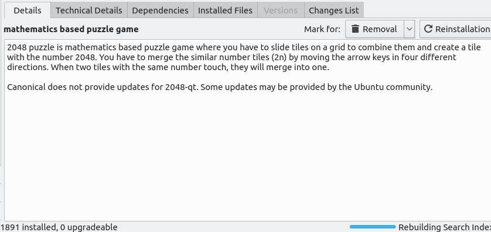
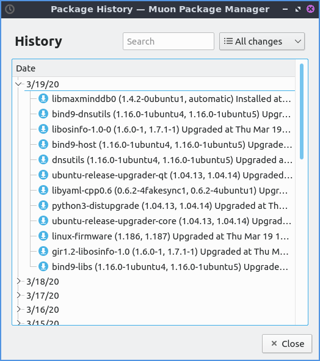
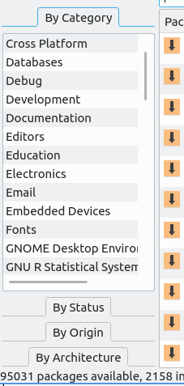
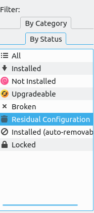
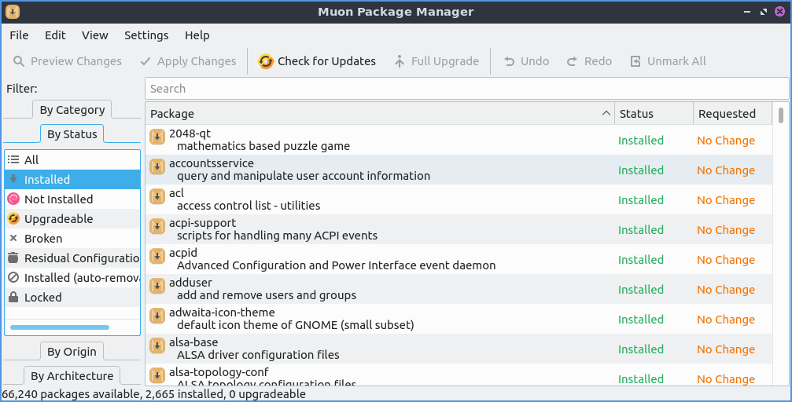
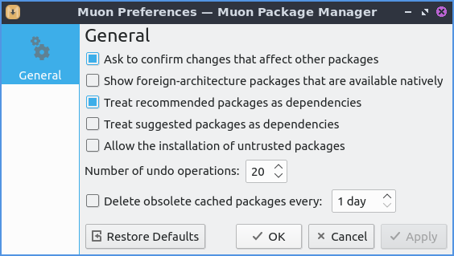
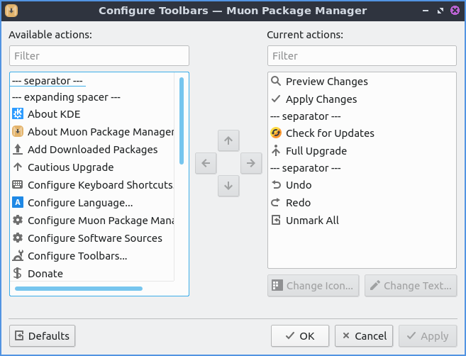
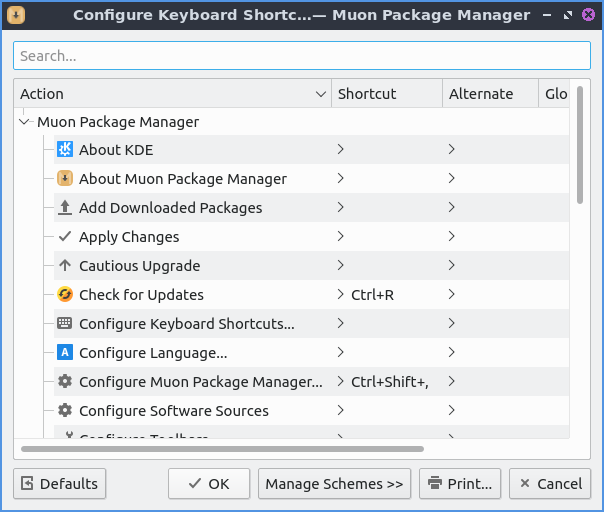

Chapter 4.2 Muon Package Manager¶
Muon Package Manager is an alternative GUI for installing and updating packages.
Usage¶
To update your packages press the gear button with a clockwise pointed arrow. If updates are available press the upward pointing arrow with a dot on top to install the updates.
To search for a program to install type into the bar at the top that says Search. If you find something you want to install you can right click and then or left click the Mark for Installation button. When the package you want to install has additional dependencies will show up if you think twice about wanting to install you can click the Cancel button to not pull in all those dependencies or press OK to continue looking for software to install. To apply your changes you can press the green checkbox button that says Apply Changes and you will end up entering your password to confirm you want to install and then the package will be installed. To go back to do other changes press the Back button. To preview your changes after hitting back press the Preview Changes button. If you want to undo the last operation you have done for installing packages press Control+z or . To choose a package to not install you can right click on it and select . To get rid of all your marked packages for installation .
The Package column shows the package name and a short description of the package. The Status column shows what the current status of the package is. The Requested column shows what status you want for the package. To reverse the sort order of packages press the triangle button just to the left of the Status, Requested, or Package columns.
To select the next package left click on the list of packages press the Down Arrow key to move to the next selected package. To select the previous package left click on the list of packages above press the Up Arrow. To move down a group of packages press the Page Down key. To move the packages up a page press the Page Up key. To move to the last package in results press the End key. To return to the first package press the Home key.
When you find your package you want to install on the bottom half of the screen there is a bar of tabs. The Details tab has a description of the package you are currently selected. The Technical Details will show you where the package comes from what category it is and what the installed size would be and what size it takes to download the package. The Dependencies tab shows you what other packages are needed by the package you wish to install. To view the changes of a package the Changes List and scroll down to view them. If you have installed a package you can see all files installed by that package in the Installed Files tab.
If you want to see your history of package updates and installed from the or press control + h. To search through your history enter what you want to search for in the Search bar. To the right to the search is a drop down menu to choose whether to view All changes, Installations, Updates, or Removals. Under the Date field shows collapseable search results of the kind of packages you are looking for. To collapse or uncollapse a the operation on a particular date press the + button to uncollapse an operation on a date. To collapse operations on a particular date is to press the - button.
On the left hand side of Muon Package Manager there is a By Category divider. In this there are many different categories like Graphics and Games and Amusement. For example the graphics tab will have image editing or creating vector graphics in the Graphics category. To go back to seeing all packages select All under the By Category divider.
To view all installed packages on the left hand side of the window under filtered click the divider for By Status and select Installed. Now in the upper main part of the window will be a window with a scrollbar to see all packages on your system. To show only files that are not installed from the By Status divider select Not Installed. From the By Status divider select Upgradeable to see which packages can be upgraded. To see only packages that are broken the filter for By Status and select Broken. To view which packages that are not installed on your system but still have configuration file from the By Status divider select Residual Configuration. To view packages installed as a dependency and know can be removed from By Status and select Install(auto-removable). To go back to seeing all packages in the By Status and select All.
To see which packages come from which source select either By Status and then select Installed or All to select all or installed packages. Then select By Origin and the name of any PPA will show which packages come from. To go back to seeing all packages select All on the sidebar under both By Status and By Origin.
If you remove some packages you may have packages that were dependencies that are no longer needed anymore you can check on this by clicking the divider on the left hand side by will show if you have packages that are now able to be removed without any problems that are no longer serving a purpose. Then select the Mark for Removal button. If you just want to mark all packages for removal . Then of course you will need to press the Apply Changes button to apply changes.
To see what repository a package comes from on the left hand side use the By Origin filter on the left hand side. Ubuntu shows packages from the official Ubuntu repositories.
To see what architecture a package uses use the By Architecture filter. To see all architectures use the All line. To see common packages see the Common for packages common to all architectures. To see 64 bit packages use the 64-bit line. To see 32 bit packages use the 32-bit line.
To check for updates in Muon press Control + R or the gear button with an arrow or . To actually update and install these upgrades fully press the Full Upgrade button or and then press the Apply Changes button. After this a status bar towards the bottom will show how much total progress is on the upgrade. To have an upgrade where packages are not removed press the upward point arrow button or .
If you want to save all of your packages on a text file you can . If you want to load these packages from a file such as if you get a new laptop . If you want to quit Muon press Control+Q.
On the bottom of Muon package manager there is a toolbar that states how many packages are available, installed, and upgradeable.
To hide the toolbar uncheck the checkbox or right click on the menubar and uncheck . Check the again to get your checkbox back.
Screenshot¶
Version¶
Denios-OS ships with version 4:5.8.0 of Muon Package Manager.
How to Launch¶
To launch Muon Package Manager from the menu or run
muon
from the command line. The icon for Muon Package Manager is a tan box with a downward pointing black arrow.
Customizing¶
To get to your preferences for Muon package manager . The checkbox Ask To confirm changes that affect other packages brings up confirmation dialog when you will affect multiple packages. The checkbox Treat recommended packages as dependencies will always install all recommended packages as dependencies and will automatically install one when you install a recommended package. To always install suggested packages as dependencies check the Treat Suggested packages as dependencies. To change the maximum number of package operations you can undo change the Number of undo operations field. To save space by deleting old cached packages check the Delete obsolete cached packages every checkbox and change the field to the right to change how often to delete the cache. To have your settings back to default press the Restore Defaults button.
To change settings on your toolbar . To remove an item from the current items on the toolbar press the button that is the leftward pointing arrow. To add an item to the toolbar press the button that is the rightward pointing arrow. To move an item up or down on the toolbar press the upward pointing arrow button. If you want to change the icon for things you have in your toolbar press the Change Icon button. To change what the toolbar says press the Change Text button and type what you want in the toolbar in the pop up menu. To set your toolbars back to the default press the Defaults button.
To view and configure your shortcuts and a window to open shortcuts will appear. The column for Action says what the keyboard shortcut will do. The column Shortcut will let you have a shortcut to apply changes. To add shortcut to something that does not have it press the small faint will bring a drop down menu and press the button next to the word Custom and input Your shortcut here. To restore all keyboard shortcuts to defaults press the Defaults button.
